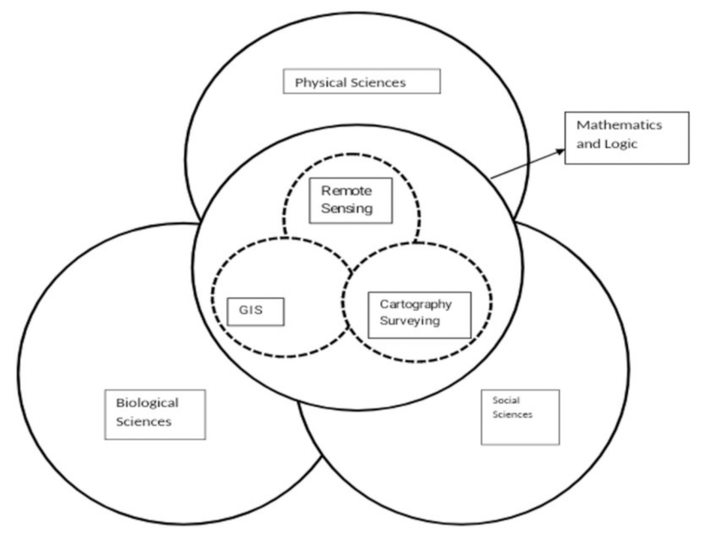

Conceptos básicos de Percepción Remota
La teledetección es el proceso de captura, medición y análisis de imágenes y representaciones digitales de patrones energéticos derivados de dispositivos sensores sin contacto con el fin de recopilar información fidedigna sobre las cosas físicas y el medio ambiente. La tecnología de teledetección ha penetrado en todos los segmentos de los recursos naturales, ya que proporciona información clara en modo de imagen.
Todos los objetos del universo reflejan, irradian o dispersan radiación electromagnética. La teledetección es una técnica o herramienta similar a las matemáticas. Se utilizan sensores para medir la cantidad de radiación irradiada por un objeto o área geográfica a distancia y, con la ayuda de algoritmos basados en estadísticas y matemáticas, se extrae información valiosa.
En la Figure 1 se muestra un modelo de interacción que describe la relación de la teledetección con las ciencias sociales, físicas y biológicas y con las matemáticas y la lógica. El proceso general de teledetección utilizado por los científicos para extraer información a partir de datos obtenidos por teledetección se desarrolla en cuatro pasos, como se muestra en la figura 2. En esta subsección, se han tratado diferentes formas de adquisición de datos de teledetección y procesos de detección de cambios.

Remote Sensing Data Acquisition Methods
Remotely sensed data collection is the most important and expensive job in the remote sensing process. It is essential to have remotely sensed images in a digital format to apply digital image processing. There are two fundamental ways to acquire the digital image:
- Capture the image with a remote sensing device in an analogue format, then convert it to digital format.
- Take a digital image of the remotely sensed image, such as one obtained by the Landsat 7 Thematic Mapper sensor system.
The ability of a system to render information at the smallest discretely separable quantity in terms of space (spatial), EMR wavelength band (spectral), time (temporal), and/or radiation quantity is characterized as resolution (radiometric). Some of the major parameters that determine the nature of the collected remote sensing data are discussed in the subsections below.
Spectral Information and Resolution
The dimension (size) and the number of specific bands or channels in the electromag- netic spectrum to which a remote sensing sensor is sensitive are spectral resolutions. The data are collected in many bands of the electromagnetic spectrum by a multispectral remote sensing sensor. The data are collected in hundreds of spectral bands by a hyperspectral remote sensing device. Energy is recorded in hundreds of bands by an ultra-spectral remote sensing system. The bands are usually chosen to maximize the contrast between the object and the background. As a result, appropriate band selection may increase the likelihood of retrieving the needed information from the remote sensor data. The greater the narrowness of the band, the greater the spectral resolution.
Spatial Information and Resolution
The lowest angular or linear gap between two objects that a remote sensing system can resolve is called the spatial resolution. Using the spatial information in the image, the amount of spectral autocorrelation may be estimated. A pixel is a small spot on the earth’s surface that a sensor can observe as being distinct from its surroundings. It is a detector element or a slit whenever projected onto the ground. In other words, the ground segment sensed at any one time is the scanner’s spatial resolution. It has sometimes been referred to as the ground resolution element (GRE). The spatial resolution at which data is obtained affects the ability to distinguish diverse features and measure their extent. According to the usual rule, the spatial resolution should be less than half the size of the smallest object of interest.
Temporal Information and Resolution
The temporal resolution refers to how often a sensor records an image of a specific area. For many applications, a high temporal resolution is critical. Temporal resolution refers to the satellite’s capacity to extract the same area from the same viewing angle at different times. A sensor’s temporal resolution is determined by several elements, including the satellite/sensor capabilities, swath overlap, and latitude.
Radiometric Information and Resolution
The sensitivity of detectors to minor variations in electromagnetic energy is known as radiometric resolution. High radiometric resolution improves the likelihood of more accurate remote sensing of phenomena. A sensor measurement allows it to distinguish the tiniest variation in spectral reflectance/remittance between different targets. The number of quantization levels and the saturation radiance determine the radiometric resolution. The more tiers there are, the more detailed the information that becomes digitalized.
Polarization Information
The polarization characteristics of electromagnetic radiation collected by remote sens- ing systems can be utilized to investigate the earth’s resources. In general, the stronger the polarization, the smoother the object’s surface.
Angular Information
The angle of incidence has traditionally been related to the incoming energy that illuminates the landscape and the angle of exitance from the terrain to the sensor system. The bidirectional nature of the remote sensing data collection influences the spectrum and polarization of the sensor light collected by the remote sensing system [3,4].
Remote Sensing Data Acquisition
The two important methods of remote sensing data acquisition are aerial photography and satellite image data collection. Aerial photographs are the snapshots of the earth taken by calibrated cameras at a particular instant of time in an analog format. Through the process of digitization, this analog format is converted into a digital format. Aerial photography can be taken from space, from high- or low-altitude airplanes, or from platforms close to the ground. Each aerial shot has vital information for the user in the margin.
Vertical Photographs: The photographic device, i.e., the camera, is pinned as straight down as possible when taking a vertical shot. The allowed tolerance from the plumb (perpendicular) line to the camera axis is normally +3 degrees. The lens axis is nearly perpendicular to the earth’s surface, covers a limited area on a single vertical shot, and closely resembles a square or a rectangle [4].
High oblique: The camera is tilted roughly 60 degrees from the vertical when taking a high oblique shot. It is mostly employed in the creation of aeronautical charts and has a minor military application. The ground area covered is trapezoid in high oblique images; the horizon is always visible in high oblique photographs.
Low Oblique: This picture is taken with the camera at a 30-degree angle to the vertical. It has been used to research an area before an attack, as a replacement for a map, or as a supplement to a map. The ground area covered is a trapezoid in a low oblique area and coverage is quite limited [5].
Trimetrogon: It is a composite of three photos shot simultaneously, one vertical and two high obliques, in a direction perpendicular to the flight path. The oblique images, taken at a 60-degree angle from the vertical, side lap the vertical photography, resulting in composites that run from horizon to horizon.
Remote Sensing Sensors
continuar …
Concept Paper Change Detection in Remote Sensing Image Data Comparing Algebraic and Machine Learning Methods